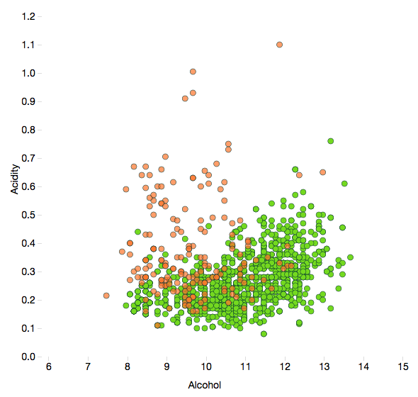
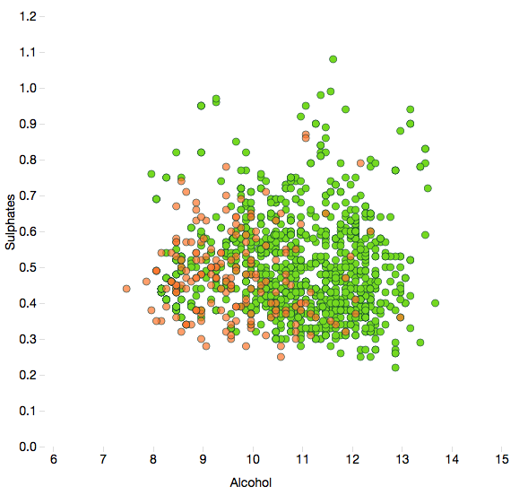
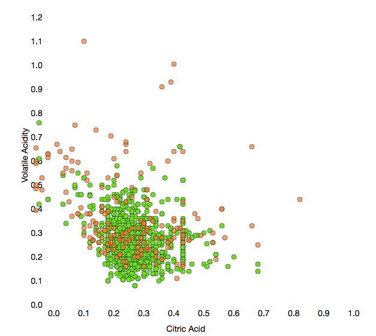

What makes a good wine ?
White wine
Red wine
Chemical components and quality
Alcohol, acidity and Sulphates
Bad wine
Common wine
Good wine



High citric acid and low acetic acid (volatile acidity) seems like a good combination.